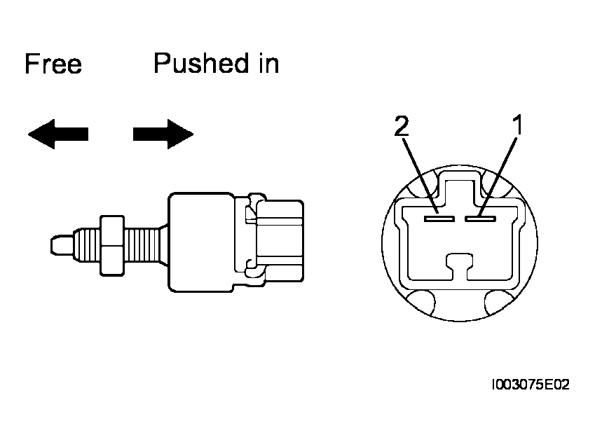

Stop Light Switch: Inspection
- INSPECT STOP LIGHT SWITCH ASSEMBLY
- Inspect the stop light switch.
- Measure the resistance of the switch.
Standard resistance
TERMINALS RESISTANCE SPECIFICATIONTester Connection Switch Condition Specified Condition 1 - 2 Switch pin pushed in (Pedal released) 10 kΩ or higher 1 - 2 Switch pin free (Pedal depressed) Below 1 Ω 
Courtesy of © TOYOTA, LICENSE AGREEMENT TMS1002If the result is not as specified, replace the switch assembly.
- Measure the resistance of the switch.
- Inspect the stop light switch.